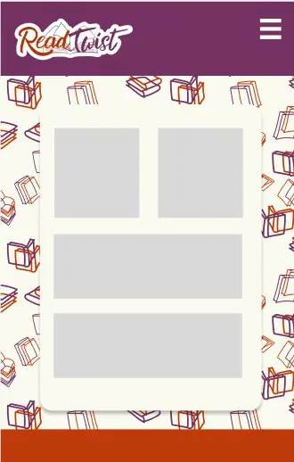
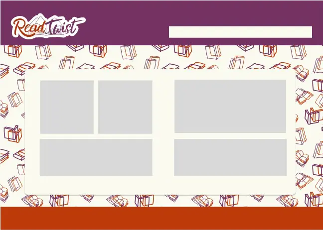

Site Purpose
ReadTwist is a reading companion app designed to make reading engaging and interactive. It blends journaling, cataloging, and random book selection to encourage exploration and reflection.
Scenarios
- A user wants to log their reading progress and thoughts in a personal journal.
- A user wants to discover a random book from their catalog to break routine.
- A user wants to browse their organized collection with clear categories.
Color Palette
Base color for backgrounds or font ideal for higher contrast deep plum (#260c1f) medium violet for accent and some backgorunds(#733262) Orange for accents (#f28c0f) Darker orange for accents and some backgrounds (#BF3A0A) Ivory for backgrounds and font againts darker backgrounds (#fafaf0)Typography
Headings use Caveat Brush for a playful, handwritten feel. Body text uses Roboto for clarity and readability.
Wireframes

